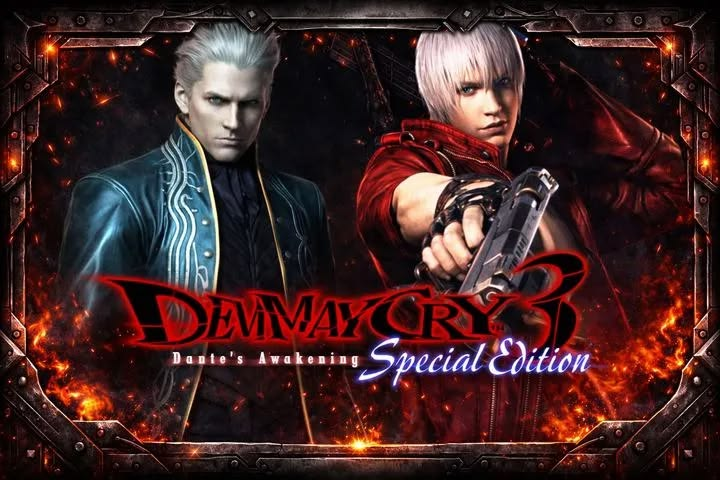

Kalau ditanya apa game hack and slash paling ikonik yg gue mainin, jawaban gua pasti jatuh ke Devil May Cry 3 Game ini rilis tahun 2005 sebagai prekuel, menceritakan masa muda Dante yang masih urakan, songong, tapi kerennya gak ada obat. Di sini kita dibawa ke masa sebelum Dante membuka toko setannya, di mana dia harus menghadapi krisis keluarga yang super kacau.

The Deep Lore: Rivalitas Abadi Dua Anak Sparda
Inti cerita dari DMC 3 ini sebenernya adalah drama keluarga berbalut pertumpahan darah iblis. Ceritanya berfokus pada hubungan benci tapi rindu antara si kembar **Dante** dan **Vergil**:
Ideologi yang Bertolak Belakang: Pasca kematian ibu mereka (Eva) akibat serangan iblis, keduanya mengambil jalan yang beda banget. Dante memilih menolak sisi iblisnya dan hidup bebas, sedangkan Vergil justru haus akan kekuatan iblis demi melindungi dirinya sendiri agar tidak kehilangan apa pun lagi.
Menara Temen-ni-gru: Vergil, dibantu oleh pria misterius bernama Arkham, membangkitkan kembali menara kuno Temen-ni-gru ke permukaan kota. Tujuannya cuma satu: membuka gerbang dunia iblis untuk merebut pedang pusaka dan kekuatan absolut dari ayah mereka, Sang Ksatria Hitam Sparda.
Lady dan Dendamnya: Karakter Mary (yang kemudian dipanggil Lady) juga punya peran penting di lore ini. Dia adalah manusia biasa yang datang ke menara buat membunuh Arkham, yang ternyata adalah ayah kandungnya sendiri yang tega mengorbankan ibunya demi jadi iblis.
"Pertarungan terakhir antara Dante dan Vergil di tengah derasnya air hujan dunia iblis bener-bener jadi salah satu boss fight paling emosional sekaligus legendaris di sejarah gaming."
🎮 Gaming Experience: Mekanik Style yang Revolusioner
Selain ceritanya yang mantap, DMC 3 diakui dunia karena berhasil menciptakan standar baru buat genre action lewat fitur mekanik game-nya:
4 Style Utama (Dan 2 Style Rahasia): Lu bisa memilih gaya tarung sesuai selera! Ada Trickster buat lari-larian dan menghindar cepat, Swordmaster buat kombo pedang jarak dekat, Gunslinger buat gaya tembak estetik, dan Royalguard(ICONIC) buat yang jago perfect block serangan musuh.
Tingkat Kesulitan Gila-gilaan: Versi original game ini terkenal susah mampus (bahkan mode *Normal*-nya versi US itu setara mode *Hard* di game Jepang!). Lu bakal sering banget ngeliat layar *Game Over* kalau asal pencet tombol tanpa strategi kombo.
Senjata yang Beragam: Gak cuma pedang Rebellion, Dante bisa dapet berbagai senjata unik dari bos iblis yang dikalahkannya, mulai dari nunchaku es (Cerberus), pedang kembar angin-api (Agni & Rudra), sampai gitar listrik yang bisa ngeluarin petir (Nevan)!
⭐ Kesimpulan Akhir
DMC 3 adalah *masterpiece* yang berhasil menyelamatkan franchise Devil May Cry setelah hancur di game kedua. Kombinasi cerita rivalitas saudara yang kuat, *soundtrack* metal yang bikin semangat, serta gameplay kombo yang sangat *satisfying* bikin game ini gak ngebosenin buat dimainin kapan pun. Skor mutlak dari gue: 9,5/10!